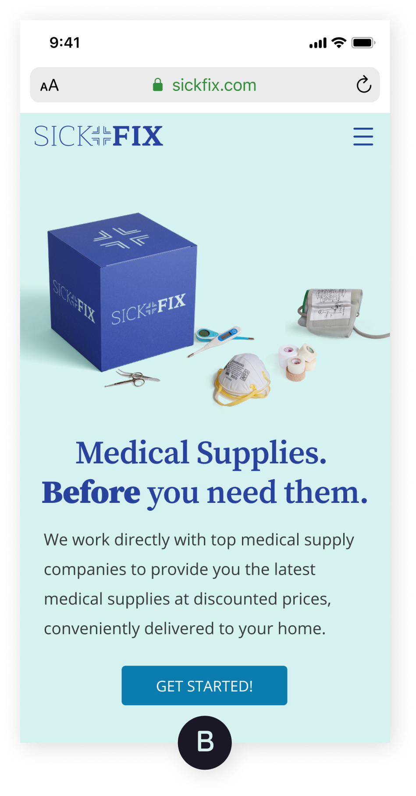
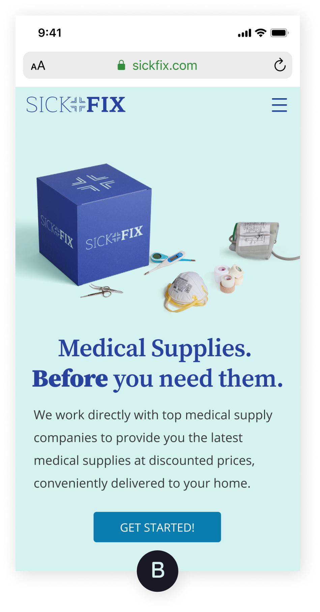
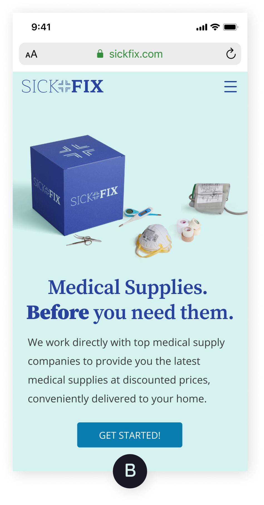

Button Color
 

Over 71% of users preferred the Option A. Keeping the logo, headers, and buttons one, consistent color blue is ideal.
There are no subscription boxes for medical supplies. Health and wellness subscription boxes currently on the market are more inspirational than functional. That is, they send products you don't need or use, and many subscription boxes don't allow you to choose your shipment frequency.
SickFix is a subscription box for medical supplies where you can choose the supplies you need when you need them.
User Research
I surveyed people who currently have subscription boxes; people who had a subscription box in the past but no longer subscribe; and people who have never subscribed to a box.
62% subscribe to a box because of convenience
56% no longer subscribe to a box because they did not receive useful items
67% haven't subscribed because there are no boxes tailored to needs
In-depth interviews:
Interviewing several survey respondents on their subscription box habits led to more insights about how to design a successful medical supply subscription box. I learned there are several important features to include:
Competitive Analysis
I performed competitive and SWOT analyses on 3 health and wellness subscription boxes: Hers, Baze, and TheraBox, and informally evaluated a dozen others. I learned that opportunities exist to create a medical supply subscription box.
View Full ResultsUser Personas
Using survey results, in-depth interviews, and competitive analyses, I generated 2 personas:
I work full-time and care for my aging mother. I'm familiar with subscription boxes, having subscribed to several health and wellness boxes in the past. I want to be able to choose products for myself and my mother, get recommendations, and have surprises thrown in.
I found that the boxes I subscribed to didn't have items I used, nor did they get sent on a schedule that I preferred.
I work remotely as a software engineer. I suffer from several minor health issues. Ordering health-related products from one convenient, inexpensive place without having to leave my home would be ideal.
There isn't a specific service tailored to my needs. The subscription boxes available often don't have products I want, ship too frequently, and have confusing sign up processes.
User Stories
After researching subscription boxes and creating a lengthy list of user tasks, I prioritized these tasks to create a Minimum Lovable Product.
High Priority Items - New User
High Priority Items - Returning User
I was advised by a knowledgable mentor to think of my MVP in terms of a 'minimum lovable product'. What features should SickFix have for people to feel engaged and want to return to the service?
User Flows
From the highest priority user stories, I sketched flows for the following tasks:
Wireframes
I performed 2 user tests on my paper sketches and quickly learned of several pain points. Below you will see how my paper sketches were transformed into wireframes.
View TasksResults Summary:
I'm not the best sketcher, so I grumble through this process. However, sketching out SickFix helped me quickly identify screens I was missing and pain points the user experienced before I got too far along in the design process.
SickFix is classically modern. It combines traditional elements (i.e. blue color, serif style font) with modern elements (i.e. powder green, modern serif and sans serif fonts, playful product name). The target audience should quickly identify what the brand is all about and what the product is.
Logo
You can see visually see my journey from word cloud to the final logo.
I explored a variety of potential names but quickly settled on SickFix. It is playful, yet identifiable in terms of the product and service being offered.
Color Palette
Primary Colors
#29429E
#D6F2F0
Secondary Colors
#363A3C
Blue is a commonly used color, particularly in medical-related brands. Blue is non-threatening and traditional, and gives feelings of peace and security. I coupled blue with a modern, pastel green color. Accessibility is key, so it is important that the green and blue well with each other for readability.
Typography
Maitree is used for the logo, only. It has the right font weights needed to emphasize the 'Fix' in SickFix. Source Serif Pro is used for headers. It was designed for the digital environment and is readable and modern. Open Sans is used for all other text on site and app. It is modern, clean, and easy to read.
View Style GuideI like taking my time on branding to develop a visually appealing, accessible color palette and choose fonts that compliment the brand. Choosing 3 fonts (logo, headers, text) did not initially feel right. "Many brands only have two fonts!" is what my mind said. I quickly realized there isn't anywhere that specifically states you can only have 2 fonts for your brand. The font choice for my logo works well with the range of font weights provided, but this font wouldn't work nearly as well as the fonts I chose for headers and text. This is OK!
Button Color

Over 71% of users preferred the Option A. Keeping the logo, headers, and buttons one, consistent color blue is ideal.
Product Display (Homepage)
76% of users chose Option A. Users preferred a 2-column layout for displaying products as opposed to the carousel layout.
Bottom Navigation Bar Color (In-App)
53% of users chose Option B, green color. Since the results for this test are not statistically significant, additional research is needed.
Hi-Fi Mockups
Round 2 user testing contained 11 tasks.
View TasksResults Summary:

SickFix has the interesting challenge of combining a subscription box model with an e-commerce feel. The biggest obstacle for me was reducing the number of steps the user has to accomplish to order a box, while also solving the problems of being able to choose items in your box and select how often you want to receive a box.
I took on an interesting challenge of creating a subscription box with e-commerce flare. SickFix is a medical supply subscription box that lets you choose the products you need when you need them. The project could have taken many directions, but through in-depth research, I learned that the ability to choose items you want (with some surprises thrown in!) and select how often you want to receive a box were critical features to be included. The challenges came in the information architecture phase where I had to balance product selection and selection of shipment frequency with other common, e-commerce onboarding tasks like account creation and checkout.
I ultimately chose to remove account creation from onboarding. Users enter their email address on checkout page and are invited to create an account via their confirmation email. While I risk losing some users who may never subscribe again and create an account, I have created a more pleasant, less tedious onboarding experience. As I continue to refine SickFix, I want to further stress test and refine the onboarding process to make it even simpler. I also want to build in general health-related questions so that SickFix can “learn” user preferences and offer product recommendations.